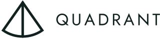
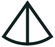
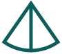
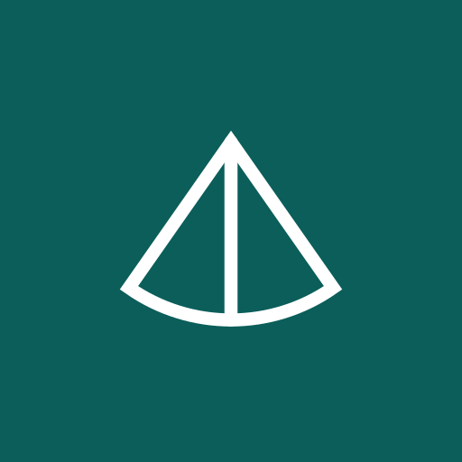

Brand guide · v1.0.0
How Quadrant looks, sounds and builds.
Brand and style guide for Quadrant Labs and every Quadrant project. One system for people and agents: calm Chesapeake colors, a mark taken from a 1956 wooden sloop, plain precise writing.
Quadrant takes its name and mark from the Quadrant sloop, a 25-foot wooden boat designed by Laurence Hartge and built at Hartge Yacht Yard in Galesville, Maryland, in the 1950s. A quadrant is also an instrument for finding your position. That's the work: helping small teams find their bearings.
Principles
When a rule below doesn't cover a case, decide with these.
- Calm water, one buoy. Surfaces are quiet: clean light backgrounds, deep Bay Water, plenty of space. Each view gets at most one loud signal, in buoy orange, on the thing that needs attention.
- Made, not generated. Use details that belong to Quadrant: the fan-shaped mark, Chesapeake colors, plain specific words. Avoid generic effects that could belong to anyone, like gradients, glows and sparkle icons.
- Plain and precise. Say exactly what is true in as few words as it takes. A number beats an adjective.
- Same yard, different boats. Every Quadrant project uses the same colors, type and voice. Projects differ by name and content, not by restyling.
- Readable by everyone. Every text color passes WCAG AA. Every product has a dark mode. Nothing is conveyed by color alone.
Logo
The mark is the sail plan of the Quadrant sloop: a fan-shaped sector with a single bisecting line, tip up. The wordmark is QUADRANT in Jost 400, tracked +0.16em, converted to outlines. Always use the supplied SVG files and never retype the wordmark.
Files










Clear space: the wordmark’s capital height on every side
- Assets.
mark.svg(ink, for light backgrounds),mark-reversed.svg(white, for dark backgrounds and photos),mark-primary.svg(Bay Water),logo-horizontal.svgandlogo-horizontal-reversed.svg(mark + wordmark),favicon.svg(filled, for 32px and below),app-icon.svg(Bay Water tile). - Colors. The logo appears only in
ink, white, or Bay Water (primaryin light mode). Nothing else. - Clear space. Keep empty space around the horizontal logo at least equal to the wordmark's capital height. Around the mark alone, at least a quarter of its height.
- Minimum size. Horizontal logo: mark at least 24px tall. Outline mark: at least 24px. Below 24px, use
favicon.svg, the filled version. - Orientation. The tip always points up. Strokes are all the same weight.
- Name in text. Write "Quadrant Labs" for the company on first mention and in legal or contact contexts, and "Quadrant" after that. The wordmark always reads QUADRANT.
Don’t
- Rotate, stretch, skew, or outline the mark
- Recolor it orange, marsh green, or a gradient, or add shadows or glows
- Retype the wordmark in a live font, change its tracking, or set it in title case
- Put the outline mark on a busy photo; use the reversed version on a dark, quiet area
- Build a separate logo for a product (see Products)
Color
Clear Day: the Chesapeake on a bright, windy afternoon. The palette has clear bay water, summer marsh and one signal-orange channel buoy. Use the tokens and never type hex values into product code.
| Light / dark | Token | Hex | Contrast |
|---|---|---|---|
--q-paper Spray Page background | #F6F7F3 #0B1615 | ||
--q-surface Cards, panels, inputs, tables | #FFFFFF #112120 | ||
--q-ink Deep Channel Body text and headings | #10211F #E8F0EC | light 15.5:1 dark 14.3:1 | |
--q-muted Heron Secondary text: captions, hints, metadata | #4E5E59 #94A8A2 | light 6.4:1 dark 6.6:1 | |
--q-border Rules, outlines, table lines | #DCE2DC #20332F | ||
--q-tint Subtle fills: chips, inline code, focus halo, selected rows | #DDEEE9 #173230 | ||
--q-primary Bay Water Brand color as text or outline: links, secondary buttons, focus border | #0B5E5A #5FCFC3 | light 7.1:1 dark 8.9:1 | |
--q-fill Bay Water Brand color as a solid: primary buttons, progress bars, selected states | #0B5E5A #0F716C | light 7.6:1 dark 5.8:1 | |
--q-on-fill Text and icons on fill | #FFFFFF #FFFFFF | light 7.6:1 dark 5.8:1 | |
--q-accent Buoy (text) Orange as text: emphasis, warnings, over-limit numbers | #B8410E #FF8A4C | light 5.1:1 dark 7.1:1 | |
--q-signal Channel Buoy Vivid orange as a solid only: badges, alerts, one highlight per view | #EE6A2A #EE6A2A | light 5.3:1 dark 5.3:1 | |
--q-on-signal Text and icons on signal | #10211F #10211F | light 5.3:1 dark 5.3:1 | |
--q-secondary Summer Marsh Second data series, small marsh-green details. Not for text. | #6E8F2E #9DBE5A | light 3.5:1 dark 8.7:1 |
- Fill vs. text. Bay Water and buoy orange each have a fill shade and a text shade. Use
fill/signalfor solid areas, always withon-fill/on-signalon top. Useprimary/accentwhen the color itself is text. Never setsignalorange as text, and never use the light dark-mode text shades as fills. - Orange is scarce. Use orange for at most one signal per view: an alert, an over-limit number, or the one badge that matters. Bay Water carries the brand.
- Buttons are Bay Water. Primary buttons use
fill. Secondary buttons are outlined inprimary. Orange is never a button. - Dark mode is required. Every product supports
prefers-color-schemeand lets the user override it withdata-theme="light"ordata-theme="dark"on<html>.tokens.csshandles both. - Contrast. Text passes 4.5:1 (WCAG AA), large text and UI boundaries pass 3:1. All text tokens are checked by the build, and the ratios are in the color table.
- Charts. Use series in this order:
primary,secondary,muted. Usesignal/accentonly for the one series or threshold the reader must notice. Label series directly and don't rely on color alone.
Don’t
- Use cream, beige or parchment backgrounds;
paperis a cool, clean light - Use decorative gradients, including on backgrounds, buttons and text
- Set long text in
muted; it is for short secondary text - Add colors outside this palette, including for one product or one chart
Typography
Jost for headings, so they match the wordmark. IBM Plex Sans for everything else. IBM Plex Mono for code. All are free on Google Fonts.
primary color · line height 1- Load fonts once with this URL:
https://fonts.googleapis.com/css2?family=Jost:wght@500&family=IBM+Plex+Sans:wght@400;500;600&family=IBM+Plex+Mono:wght@400;500&display=swap. - Headings use Jost 500, sentence case, letter-spacing -0.005em. Never set headings in all caps. Tracked caps are only for the wordmark and kickers.
- Weights. Plex 400 for text, 500 for labels and buttons, 600 for emphasis. Never heavier than 600, and no italics for emphasis in UI.
- Numbers in tables, prices and metrics use
font-variant-numeric: tabular-numsso columns line up. - Line length. Paragraphs max out at 68 characters (
--q-measure). Left-align text; center only single short lines. - Inline code uses Plex Mono at 0.875em on a
tintbackground.
Don’t
- Use Inter, or soft display serifs (Fraunces, Instrument Serif, Playfair Display); they read as AI-default
- Mix in other typefaces for variety
- Use light weights (300 and below) for body text
Layout & components
Spacing is a 4px scale. Borders separate surfaces, and shadows are only for things that float.
Spacing scale
Components (live, from base.css)
| Client | Hrs / wk | Monthly |
|---|---|---|
| Harbor Analytics | 12 | $9,600 |
| Oyster Point Labs | 6 | $4,800 |
| Total | 26 | $20,800 |
- Spacing. Use the scale only: 4, 8, 12, 16, 24, 32, 48, 64, 96px (
--q-space-1to--q-space-9). Page gutters are 16px on phones and 24px or more on larger screens. Content maxes out at 1120px. - Radius. 4px for buttons, inputs and chips. 6px for cards, panels and code blocks. Pills (999px) only for status badges. Nothing rounder than 8px.
- Borders, not shadows. Separate surfaces with a 1px
borderline. Use--q-shadowonly on menus, popovers and dialogs. - Buttons. Primary:
fillbackground,on-filltext, weight 500, 14px, padding 10px 16px. Secondary: transparent with a 1pxprimaryborder andprimarytext. Use one primary button per view. - Inputs.
surfacebackground, 1pxborder, 4px radius. On focus, use a 1pxprimaryborder plus a 3pxtinthalo. - Focus. Every interactive element shows a visible focus style. Never remove outlines without a replacement.
- Motion. Use 160ms ease-out for state changes only. No bounce, parallax or decorative animation. Respect
prefers-reduced-motion. - Icons. Use simple line icons with a 1.5px stroke (for example Lucide) in
inkormuted, at 16 or 20px. No filled, multicolor or 3D icons.
Don’t
- Build a hero that's a centered headline over a gradient, followed by three icon-and-blurb feature cards
- Use glassmorphism, blurred blobs or glowing borders
- Stack cards inside cards
Illustration & imagery
Use real places and real things from the Chesapeake, wooden boats and navigation, drawn simply.
- Illustration is hand-built SVG or watercolor in the Clear Day palette. Good subjects are the Quadrant sloop, workboats, marsh, charts and tools.
- Known exception: the current quadrantlabs.io homepage uses a warm sunset watercolor of the sloop in an earlier palette. It will be repainted in Clear Day, so don't copy its colors into new work.
- Photos are real, in natural light, and credited. Only use photos we have permission to publish.
Don’t
- Use stock photos of people pointing at screens, shaking hands or high-fiving
- Use abstract 3D renders, gradient blobs or "AI sparkle" imagery
- Use emoji as decoration in product UI or headings
Voice & writing
Quiet craftsman. Write like a good boatyard talks: plain, precise and warm, with no hype. Trust comes from specifics, not adjectives.
- Say the specific thing. Name the number, the tool, the outcome. "Deploys went from 40 minutes to 6" beats "dramatically faster deploys".
- Short and active. Use short sentences and active voice, and cut any word that isn't doing work.
- Warm, not chummy. Be friendly and direct. Don't use exclamation marks, "Oops", or jokes in error messages.
- Nautical, lightly. Use at most one nautical reference per page, and only if it helps the meaning. No puns.
- Sentence case everywhere: headings, buttons, menus, tabs.
- Buttons say what happens: "Save scenario", not "Submit" or "OK".
- Errors say what happened and what to do next, without blaming the user.
- Empty states use one sentence about what goes here and one action to start.
- Numbers and dates. Use numerals (3 clients, $14,200). Write dates like Nov 1, 2026 in prose, and use ISO format (2026-11-01) in code, file names and data.
Words that fit
helpbuilddecidefixplansteadyclearsmall teampart-timecoursebearingsWords to avoid
elevateseamlessunlockempowerleverage (as a verb)cutting-edgegame-changersuperchargerevolutionizedelvejourneysolutions (meaning services)synergyworld-classbest-in-class"in today's fast-paced world"We leverage cutting-edge technology to empower your team's journey to success.
I help small teams decide what to build, who to hire, and what to leave alone.
Oops! Something went wrong.
Couldn't save the scenario. Check your connection and try again.
Submit
Save scenario
Welcome to Planner! 🎉 Let's get started on your journey!
No scenarios yet. Add your first client to start.
Products
Quadrant projects (Planner, Trip Split, Bookrec, Metronome and others) share the whole system. A product is identified by its name, not by its own colors or logo.
App bar
- Naming. Use the product's plain name followed by a small "Quadrant": Planner · Quadrant. Don't write "Quadrant Planner".
- App bar. Show the outline mark at 16 to 20px in
primary, then the product name in Plex 600, then " · Quadrant" inmuted400. - Page title. Use the form
<title>Planner · Quadrant</title>, with the current view first when useful:Scenario B · Planner · Quadrant. - Favicon and app icon. Use the shared
favicon.svgandapp-icon.svg. Products don't get their own marks. - Colors. Products use Clear Day exactly. There are no per-product accent colors.
- README. The H1 is the product name. The first line says what it does in one sentence. The footer reads "Made by Quadrant Labs · quadrantlabs.io".
Don’t
- Design a product logo or wordmark
- Add a tagline under the product name
- Swap Bay Water for a "product color"
For agents
This guide is written to be followed by AI agents as well as people. llms.txt contains every rule on this page as plain text.
- Adopt in a repo by adding the snippet below to the project's
CLAUDE.mdorAGENTS.md. - Copy, don't hotlink. Copy
tokens.css(and optionallybase.css) into the project and note the version from its header. Update deliberately. - Use tokens, never hex. Write
var(--q-primary), not#0B5E5A. If a needed color doesn't exist, use the closest token and flag it. Don't invent a new color. - Use the SVG assets for the logo. Never draw or retype it.
- When unsure, choose the quieter option and apply the Principles.
Add to CLAUDE.md / AGENTS.md
## Brand
This project follows the Quadrant brand guide.
- Rules: https://quadrantlabs.io/brand/llms.txt (read it before any UI, copy, or asset work)
- Tokens: copy https://quadrantlabs.io/brand/tokens.css into the project; use `var(--q-*)`, never raw hex
- Logo: SVG files listed at https://quadrantlabs.io/brand/#logo (never redraw)Checklist before shipping
- Colors come only from
--q-*tokens; no raw hex in components - Light and dark mode both work;
data-themeoverride works - Headings are Jost 500 in sentence case; everything else is IBM Plex Sans/Mono
- At most one orange (
signal/accent) element per view - Primary buttons use
fill, and there's one per view - All text passes 4.5:1 contrast; focus styles are visible
- Copy has no words from the avoid list, no exclamation marks and no emoji
- Product name reads "Name · Quadrant" in the app bar and the page title
- Logo comes from the supplied SVG, at least 24px, in ink, white or Bay Water
All files
llms.txt: Every rule on this page, as plain text.tokens.css: CSS variables, light + dark.base.css: Optional element defaults and .q-* classes.tokens.json: Tokens for non-CSS tools.assets/mark.svg: Outline mark, ink. Light backgrounds.assets/mark-reversed.svg: Outline mark, white. Dark backgrounds and photos.assets/mark-primary.svg: Outline mark, Bay Water. Light backgrounds, app bars.assets/logo-horizontal.svg: Mark + wordmark, ink. Default logo.assets/logo-horizontal-reversed.svg: Mark + wordmark, white. Dark backgrounds.assets/favicon.svg: Filled mark, Bay Water. Favicons and anything 32px or smaller.assets/app-icon.svg: Bay Water square with white mark. App and PWA icons (512px).